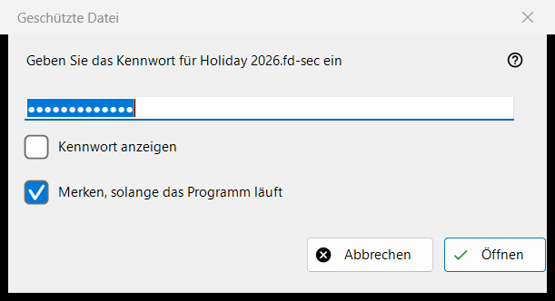
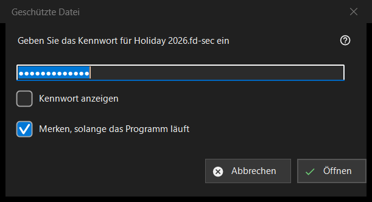

Geschützte Datei
Verwendungszweck
Fragt nach dem Kennwort eines geschützten Containers, einer .fd-sec-Datei, wenn sie auf den Bildschirm kommt. Das Fenster öffnet sich, wenn Sie die Eingabetaste drücken oder auf die gesperrte Datei klicken, und von selbst, sobald Sie bei einer solchen Datei anhalten; eine Diashow überspringt geschützte Dateien und zählt sie. Der Inhalt wird aus dem Arbeitsspeicher gezeigt: Nichts Entschlüsseltes wird auf die Festplatte geschrieben. Nur in der modernen Programmversion.


In dieser Reihenfolge
- Geben Sie das Kennwort ein; es wird verdeckt.
- Haken Sie «Merken, solange das Programm läuft» an, wenn andere Container dasselbe Kennwort verwenden.
- Drücken Sie «Öffnen» (Eingabetaste).
- «Abbrechen» (Esc) lässt die Datei gesperrt.
Die Elemente
Das Kennwort
Die Abfrage nennt die Datei. «Kennwort anzeigen» ist am Anfang ausgeschaltet. Das Kennwort wird genau so verwendet, wie Sie es eingeben, und nicht im Hauptthread geprüft, sodass das Programm reaktionsfähig bleibt, während die langsame Schlüsselableitung läuft; es wird nie in die Registrierung, in eine Datei oder in den Windows-Speicher geschrieben.
Merken, solange das Programm läuft
Standardmäßig angehakt. Es hält das Kennwort im Arbeitsspeicher, bis das Programm geschlossen wird, und erst, nachdem sich ein Container damit tatsächlich geöffnet hat; das Programm probiert es dann bei den nächsten Containern stillschweigend aus und fragt nur, wenn es nicht passt.
Eine Ablehnung und ein leeres Kennwort
Nach einem Fehlversuch kommt das Fenster zurück mit «Es ließ sich nicht öffnen: das Kennwort kann falsch sein, die Datei war vielleicht nie ein Container, oder sie wurde verändert.». Diese Fälle sehen absichtlich gleich aus: Ein falscher Schlüssel und ein geändertes Byte lassen sich nicht unterscheiden. Ein beschädigter oder nicht unterstützter Container bekommt eine eigene Meldung und kein Kennwortfenster. Ein leeres Kennwort wird akzeptiert, aber beim ersten Drücken der Eingabetaste erscheint «Ein leeres Kennwort ist kein Schutz: eine solche Datei ist nur vor einem flüchtigen Blick verborgen. Drücken Sie erneut, um sie zu öffnen.», und beim zweiten Drücken öffnet sich die Datei.
Abbrechen
Abbrechen, Esc und das Schließen-Kästchen sind ein und derselbe Weg und ändern nichts. Die Datei zeigt «Ein Kennwort wird benötigt - drücken Sie die Eingabetaste oder klicken Sie die Datei an», und das Programm fragt nicht erneut danach, solange dieser Ordner offen bleibt. Eingabetaste oder ein Klick auf die Datei fragt erneut.